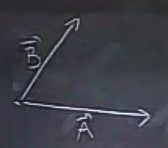

Bir vektör 1) yön 2) büyüklük (magnitude) bilgisini taşıyan bir ölçümdür.
Üç boyutlu bir ortamda x,y,z eksenleri üzerinden üstteki gibi bir vektör çizebilirdik. Bu vektör (ok istikametinde) bir yönü gösteriyor, bir büyüklüğü de var. Vektörü bu eksenler içinde çizince, o vektörü her eksendeki yansımasına göre temsil edebilirim demektir; x yönünde ne kadar değişim var, y yönünde ne kadar var, vs. gibi.
Sembolik olarak harfin üzerinde bir ok işareti, mesela $\vec{A}$ gibi, bize elimizdeki değişkenin bir vektör olduğunu hatırlatmak içindir. Bazı kitaplarda ok yerine sembol sadece köyü renkli olarak gösterilmiş olabilir, bunu tarihi sebepleri var, çünkü matbaa baskısında eskiden koyuluğu (bold) yapmak kolaydı, ok işaretini yapmak zordu.
Bir vektörü birim vektörler üzerinden temsil etmek mümkündür, mesela
$$ \vec{A} = a_1 \hat{i} + a_2 \hat{j} + a_3 \hat{k} $$
ki birim vektörler tek bir eksen üzerinde tek birimlik bir adımı temsil ederler. Mesela $\hat{i}$, x ekseni üzerinde 1 adımlık bir büyüklüktür, diğerlerinde değişim sıfırdır, $\hat{i} = <1,0,0>$. Notasyonun işleyip işlemediğine bakalım, eğer $<2,3,5>$ vektörünü temsil etmek isteseydik, bunu $2\cdot<1,0,0> + 3\cdot<0,1,0> + 5\cdot<0,0,5>$ ile yapabilirdik. Toplam $<2,3,5>$ verecekti.
Hazır bahsetmişken, diğer vektör notasyonu
$$ \vec{A} = < a_1, a_2, a_3 > $$
Vektör büyüklüğü $|\vec{A}|$ ile gösterilir, ki $|\cdot|$ işareti mutlak değer (absolute value) notasyonu ile aynıdır. Bu değer tek bir sayı (scalar) geri getirir. Vektör yönü, ki bu bazen $dir(\vec{A})$ ile gösterilir, vektörün birim vektör haline getirilmesi ile elde edilir, yani vektörün tüm öğelerinin onun büyüklüğüne bölünmesi ile. Bu yapılınca vektör büyüklük bilgisi kaybolmuş olur tabii, geriye sadece yön kalır. Bu bilgi, daha doğrusu, "sadece yön" verisi içerir, yoksa vektör olduğu şekliyle de yön bilgisini zaten içerir.
İki nokta $P$ ve $Q$ arasında bir vektörü $\vec{PQ}$ olarak gösterebilirim. Fakat bu illa ki $P$'den başlayıp $Q$'ye gelmem gerektiği anlamına gelmez, aynı yönde aynı uzunlukta paralel bir başka vektör de $\vec{PQ}$ vektörü olabilir. Bu derste pek çok vektörü orijin noktasından (0,0,0) başlayarak çizeceğiz, fakat aslında bunu yapmak mecburi değil. Çizimsel basitlik için bunu yapacağız.

Şimdi alttaki grafiğe bakalım. Uzunluk nedir?

Yani $\vec{A} = <3,2,1>$'in uzunluğu nedir? Bu uzunluğu bulmak için ikinci bir resme bakalım:

Burada $\vec{A}$'nin yz düzlemine olan yansımasını $\vec{B}$ olarak düşünelim, $\vec{A}$ sadece xy değerlerini taşıyor yani $\vec{B} = <3,2>$. Şimdi $\vec{A}$ ve $\vec{B}$'nin ikisinin de üzerinde olduğu ve bir tarafı z ekseni olan bir kesiti hayal edelim. Bu kesiti ayırıp alttaki gibi çizebiliriz:
Görüldüğü gibi $\vec{A}$ ve $\vec{B}$ arasında z bağlamında 1 birimlik bir fark var, bu da $\vec{A} = <3,2,1>$ vektörünü $\vec{B}=<3,2>$ olarak alırken dahil etmediğimiz 1 değeri.
Üstteki grafiğe bakarsak Pitagor teorisini kullanarak $|\vec{A}|$'yi bulabiliriz. $|\vec{A}|^2 = |\vec{B}|^2 + 1^2$. Demek ki problem $|\vec{B}|$'nin hesaplanmasına indirgendi,çünkü onu bulursak üstteki formülden $|\vec{A}|$'yi da bulabiliriz. $|\vec{B}|$ nedir? Onu da xy düzleminde / kesitinde Pitagor kullanarak bulabiliriz, $|\vec{B}|$ x ekseninde 3 birim, y ekseninde 2 birimlik adımlar içeriyor, Pitagoru kullanırsak
$$ \vec{B} = \sqrt{3^2 + 2^2} = \sqrt{13} $$
$$ |\vec{A}| = \sqrt{|\vec{B}|^2 + 1^2} = \sqrt{13 + 1} = \sqrt{14} $$
Genel formül
$$ |\vec{A}| = \sqrt{a_1 ^2 + a_2^2 + a_3^2} $$
Vektörlerle başka ne yapabiliriz? Onları ekleyebiliriz, ve ölçekleyebiliriz.
Ekleme
Elimizde $\vec{A}$ ve $\vec{B}$ var ise, $\vec{A} + \vec{B}$ hesabını yapabiliriz.
Bu noktada şu yorumu eklemek gerekir, vektörler iki farklı dünyada yaşarlar, bir tanesi geometrik dünya (şekilsel), diğeri hesapsal dünya (sayılarla temsilleri). Bu sebeple vektörler hakkındaki her sorunun iki cevabı vardır, biri geometrik diğeri sayısal cevap.
Geometrik cevap ile başlayalım:
Diyelim ki iki vektörü aynı noktadan çıkacak şekilde çizmiştim

Toplamı almak için $\vec{B}$'yi alıp hareket ettiririm (başlangıç bitiş noktalarının önemli olmadığını söylemiştik), ve $\vec{A}$'nin bittiği noktadan başlamasını sağlarım.

Bunun bir paralelogram ortaya çıkardığını görüyoruz.

Eğer bu paralelogramın çaprazını hesaplarsak / çizersek, işte bu çapraz $\vec{A} + \vec{B}$ olarak nitelenebilir.
Yani bu iki vektörün birbiriyle toplanması $\vec{A}$ üzerinde, sonra $\vec{B}$ üzerinde hareket etmekle eşdeğer. Ya da, paralelogramın üst kısmına bakarsak, önce $\vec{B}$ sonra $\vec{A}$ yönünde hareket etmekle eşdeğer ($\vec{A} + \vec{B} = \vec{B} + \vec{A}$ eşitliğini grafiksel olarak böylece doğrulamış ta olduk).
Sayısal olarak düşünürsek
$$ \vec{A} = < a_1, a_2, a_3 > $$
$$ \vec{B} = < b_1, b_2, b_3 > $$
$$ \vec{A} + \vec{B} = < a_1+b_1, a_2+b_2, a_3+b_3 > $$
Tek Sayı İle Çarpmak
Eğer elimizde $\vec{A}$ var ise, $2 \cdot \vec{A}$ ile bu vektörü aynı yönde iki kat daha fazla gitmesini sağlayabiliriz. Ya da yarısı, ya da eksi yönde, vs.

Şimdi vektörler hakkında birkaç yeni operasyon daha öğreneceğiz. Bu operasyonlar geometriye daha detaylı şekilde başlayınca işimize yarayacak. İleride göreceğimiz gibi, geometri vektörler üzerinden yapılabilir, hatta pek çok açıdan, geometri de çalışmak için vektörlerin "en uygun dil" olduğu söylenebilir. Özellikle fonksiyonlar konusuna gelince vektörler kullanmak, diğer tür geometrik işlemleri kullanmaktan daha faydalı olacak.
Tüm bunlar bir tür "dil", bir şeyin farklı bir şekillerde temsilinden ibaret, vektörler, fonksiyonlar, vs. gibi temsili objeler. Fakat notasyon fark yaratabiliyor, bazı şeyleri kolaylaştırıp, temizlik getirebilmesi açısından.
Noktasal Çarpım
$$ \vec{A} \cdot \vec{B} = \sum a_ib_i = a_1b_1 + a_2b_2 + a_3b_3 \qquad (1) $$
Önemli bir nokta: Sonuç bir tek sayı (scalar), bir vektör değil.
Peki bu operasyon niye kullanılır? Neye yarar? Aslında biraz garip bir operasyon. Bu sorunun cevabını vermeden önce belki de geometrik olarak ne yaptığını göstermek daha iyi olur. İddia ediyorum ki
$$ \vec{A} \cdot \vec{B} = |\vec{A}||\vec{B}| \cos \theta \qquad (2) $$
ki $\theta$ iki vektörün arasındaki açı
Fakat dediğimiz gibi, bu operasyon çok suni bir şey gibi duruyor. Niye bu çetrefil operasyonu yapalım ki? Şu sebepten: elde ettiğimiz sonuç, $|\vec{A}||\vec{B}| \cos \theta $ eşitliği üzerinden bize hem büyüklükler bağlamında, hem de açısal bağlamda bir şeyler söylüyor / bilgi veriyor. Ekstra bir bonus ise bu hesabın çok kolay yapılabilmesi, iki vektörün öğelerini teker teker birbiriyle çarpınca noktasal çarpım sonucunu elde ediyoruz.
Fakat noktasal çarpım ve büyüklük, açı içeren formül arasında ne bağlantı var? Matematikte bu tür bağlantıların ispatlanması gerekir. Üstteki eşitlik bir teoridir (bu dersin ilk teorisi!). İspatlayalım. İçinde büyüklük ve açı içeren geometrik tanım ne anlama geliyor? Alttaki ifade üzerinden kontrol edelim. Eğer $\vec{A}$'nin kendisi ile noktasal çarpımını alsak ne olurdu?
1) $\vec{A} \cdot \vec{A} = |A|^2\cos(0) = |A|^2$
$\cos(0)$ çünkü vektörün kendisi ile noktasal çarpımını alıyoruz, vektörün kendisi ile arasındaki açı sıfır. Sıfırın $\cos$ değeri 1. Peki diğer formu kullansaydık ne olacaktı? O zaman
$$ a_1^2 + a_2^2 + a_3^2 $$
elde edecektik, ki bu ifade $|A|^2$'ye eşittir çünkü büyüklüğün tanımını hatırlarsak
$$ |\vec{A}| = \sqrt{a_1 ^2 + a_2^2 + a_3^2} $$
iki tarafın karesini alırsak
$$ |\vec{A}|^2 = a_1 ^2 + a_2^2 + a_3^2$$
bu ifadenin sağ tarafı noktasal çarpımdan elde ettiğimizle aynı.
2) Peki ya elimizde iki farklı vektör varsa?
İddiam şu ki formül (1) ve (2) arasındaki ilişkiyi Kosinüs Kanunu ile kurabilirim. Bu kanunu yazalım

$$ |\vec{C}|^2 = |\vec{A}|^2 + |\vec{B}|^2 - 2|\vec{A}||\vec{B}|\cos(\theta) $$
Bu arada, eğer bu formülü
$$ |\vec{C}|^2 = |\vec{A}|^2 + |\vec{B}|^2 $$
şeklinde yazsaydım Pitagor Formülü olurdu, ama burada Pitagor kullanamayız çünkü arada dik açı yok, o yüzden üçüncü terimi eklemek gerekti.
İspat
Şöyle başlayalım
$$ |\vec{C}|^2 = \vec{C} \cdot \vec{C} $$
Bunun doğru olduğunu biliyoruz, daha önce ispatladık. $\vec{C}$'nin üstteki tanımını yerine koyarsak
$$ = (\vec{A} - \vec{B}) \cdot (\vec{A} - \vec{B}) $$
Şimdi bu çarpımı açarak 4 terimin toplamı haline getirmek isterdik, ama bunu yapabilir miyiz? Daha bilmiyoruz, noktasal çarpım operasyonunu daha yeni gördük, gizemli yeni bir operasyon bizim için şu anda. Fakat cevap evet, çünkü formül (1)'deki tanıma bakarsak, açılım yapmak için bize gerekli şekilde davranacağını görebiliriz. O zaman
$$ = \vec{A}\cdot\vec{A} - \vec{A}\cdot\vec{B} - \vec{B}\cdot\vec{A} + \vec{B}\cdot\vec{B} $$
İlk ve son terimin karşılığını hemen yazabiliriz, alttaki ilk iki terim onlar zaten
$$ = |\vec{A}|^2 + |\vec{B}|^2 - 2\vec{A} \cdot \vec{B} $$
Geride kalan en son terimi, son formül içindeki $\cos$ içeren formül ile karşılaştıralım, aralarındaki tek fark, bir tarafta $2\vec{A} \cdot \vec{B}$ diger tarafta $2|\vec{A}||\vec{B}|\cos(\theta)$ olması.. Ve formül (2)'deki eşitlikten bu iki terimin de aslında birbirine eşit olduğunu biliyoruz.
Uygulamalar
1) Uzunlukları ve açıları (özellikle açıları) hesaplamak.

Diyelim ki sol alt köşedeki $\theta$ açısını hesaplamak istiyoruz.
$$ \vec{PQ} \cdot \vec{PR} = |\vec{PQ}||\vec{PR}|\cos(\theta) $$
Bu formülde bilinmeyen $\theta$, bilahere $\cos(\theta)$. Uzunlukları hesaplayabiliriz, formülünü biliyoruz. Noktasal çarpımları da hesaplayabiliriz, onun da basit bir formülü var.
$$ \cos\theta = \frac{\vec{PQ} \cdot \vec{PR}}{|\vec{PQ}||\vec{PR}|}$$
$$ = \frac{<-1,1,0>\cdot<-1,0,2>} { \sqrt{(-1)^2+1^2+0^2 }\sqrt{(-1)^2+0^2+2^2 } } $$
$$ = \frac{1+0+0}{\sqrt{2}\sqrt{5}} $$
$$ = \frac{1}{\sqrt{10}} $$
$$ \theta = \cos^{-1}(\frac{1}{\sqrt{10}}) \approx 71.5^o $$
Burada $\vec{A}\cdot\vec{B}$'nin işaretine (artı mı eksi mi) dikkat çekelim.
Eğer işaret $>0$ ise, o zaman $\theta < 90^o$ (üstteki resimdeki 1. figür).
Eğer işaret $=0$ ise, o zaman $\theta = 90^o$ (üstteki resimdeki 2. figür).
Eğer işaret $<0$ ise, o zaman $\theta > 90^o$ (üstteki resimdeki 3. figür).
Yani noktasal çarpım bir nevi iki vektörün ne kadar "beraber gittiğini" ölçüyor. Üstte 1. şekil aşağı yukarı aynı yöne doğru giden iki vektör, ve işaretleri pozitif. 2. şekil dikine giden vektörler, alaka yok. Tersine gidenlerde işaret negatif.
2) Diklik Kontrolu
Diyelim ki size
$$ x + 2y + 3z = 0 $$
şeklinde bir formül verdim. Sizce bu formül nasıl bir şekli ortaya çıkartır? Cevaplar:
Düşünün..
Doğru cevap: 4.
Bunun bir düzlem olduğunu nasıl görebiliriz? Vektörler burada yardımımıza yetişiyor. Bir $\vec{OP}$ vektörü olduğunu düşünelim, ki bu vektörün öğeleri $x,y,z$ olsun.

$x + 2y + 3z = 0$ ifadesine bakarsak, onu bir noktasal çarpım olarak temsil edebiliriz, bu çarpım $\vec{OP}$ ile "bir başka vektörün" çarpımı olabilir. Bu diğer vektör $\vec{A} = <1,2,3>$ vektörü olabilir. O zaman şu koşul
$$ x + 2y + 3z = 0 $$
Aslında
$$ \vec{OP} \cdot \vec{A} = 0 $$
olarak ta temsil edilebilir.
Peki üstteki noktasal çarpımın sıfıra eşit olması ne demektir? Vektörler hakkındaki bilgilerimizi kullanırsak, sıfıra eşitlik bu iki vektörün birbirine dik olması anlamına gelir. O zaman düzlemin ne olduğu hakkında bir ek bilinç daha geliştirmiş olduk. Elde ettiğimiz orijin noktasından geçen bir düzlem ve $\vec{A}$'ya dik.
Fakat elimize geçen özgün (unique) bir düzlem mi yoksa seçeneklerden sadece biri mi? Çünkü şu akla gelebilir: eğer bir vektör başlangıç olarak herhangi bir yere konulabiliyorsa, o zaman herhangi bir yerden başlayabilecek $<1,2,3>$'ye dik olmak ne demektir?
İyi bir soru fakat şunu hatırlayalım: Başlangıç değişse de yön değişmiyor, yani farklı düzlemler olsa bile birbirlerine paralel olurlar. Ayrıca $x + 2y + 3z = 0$ formülüne iyi bakalım, bu formülü tatmin eden pek çok $x,y,z$ değerlerinden birisi $0,0,0$ değeridir, yani orijin noktasıdır. O zaman bu düzlem orijinden kesinlikle geçmeli, ki bu mümkün düzlemleri tek bir seçeneğe indiriyor.
Düzlem formülü $ax + by + cz + d= 0$ diye gider, bizim formülde $d=0$. Bu form orijinden geçme zorundadır.
Bu düzlemi grafiklemek için alttaki programı kullanalım
# plotting ax + by + cz = 0, or (ax + by)/-c = z
# ax + by + cz = 0 formulu grafikliyoruz ya da, (ax + by)/-c = z
from mpl_toolkits.mplot3d import Axes3D
fig = plt.figure()
ax = Axes3D(fig)
X = np.arange(-10, 10, 0.5)
Y = np.arange(-10, 10, 0.5)
X, Y = np.meshgrid(X, Y)
Z = (X + 2*Y ) / -3
surf = ax.plot_surface(X, Y, Z,rstride=1, cstride=1, alpha=0.3, color='yellow')
ax.set_xlim3d(-10, 10)
ax.set_ylim3d(-10, 10)
ax.set_zlim3d(0, 30)
plt.savefig('plane.png')